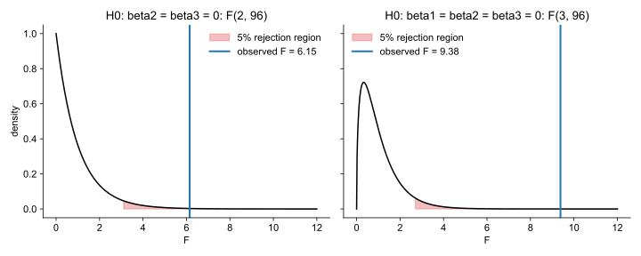

Articles · Econometrics
The F Test: Testing Several Coefficients at Once
A t test asks whether one coefficient is zero. Often the question is about several coefficients together: do two related variables, jointly, affect the outcome? Do the regressors, all together, explain anything? This article explains the F test, which answers these questions with a single statistic, and shows why it can reach a different conclusion from the individual t tests.
All estimates are computed from scratch with NumPy; SciPy provides only the Student t and F distributions.
Joint hypotheses
In the model
$$y = \beta_0 + \beta_1 x_1 + \beta_2 x_2 + \beta_3 x_3 + u ,$$we ask whether \(x_2\) and \(x_3\), together, affect \(y\):
$$\begin{cases} H_0\colon \beta_2 = 0 \text{ and } \beta_3 = 0 & (q = 2 \text{ restrictions}) \\ H_1\colon \text{at least one of } \beta_2, \beta_3 \text{ is different from zero} \end{cases}$$Two separate t tests do not answer this question. Each t test asks whether one coefficient is zero while the other variable stays in the model, and rejecting whenever at least one of the two t tests rejects does not give a test at the 5% level. We need one statistic for the \(q\) restrictions together.
Restricted and unrestricted model
The sum of squared residuals measures the variation in \(y\) that a model leaves unexplained:
$$\mathrm{SSR} = \sum_{i=1}^{n} \hat u_i^2 , \qquad \hat u_i = y_i - \hat y_i .$$The F test compares two models estimated on the same data:
- the unrestricted model contains all the regressors, \(y = \beta_0 + \beta_1 x_1 + \beta_2 x_2 + \beta_3 x_3 + u\), and gives \(\mathrm{SSR}_{ur}\);
- the restricted model imposes \(H_0\), dropping \(x_2\) and \(x_3\): \(y = \beta_0 + \beta_1 x_1 + u\), and gives \(\mathrm{SSR}_r\).
Dropping regressors can only increase the SSR, so \(\mathrm{SSR}_r \geq \mathrm{SSR}_{ur}\). If \(x_2\) and \(x_3\) matter, the SSR increases by a lot.
The F statistic
The F statistic measures the increase in the SSR per restriction, relative to the SSR of the unrestricted model:
$$F = \frac{(\mathrm{SSR}_r - \mathrm{SSR}_{ur})/q}{\mathrm{SSR}_{ur}/(n-k-1)} \ \sim\ F_{q,\,n-k-1} \ \text{ under } H_0 ,$$where \(k\) is the number of regressors in the unrestricted model. The distribution requires the same assumptions as the t test: the Gauss-Markov assumptions and normal errors.
Rejection rule. We reject \(H_0\) at level \(\alpha\) if \(F > c\), where the critical value \(c\) leaves \(\alpha\) in the right tail of \(F_{q,n-k-1}\); equivalently, if the p-value \(\Pr(F_{q,n-k-1} > F)\) is below \(\alpha\). Only large values of \(F\) count against \(H_0\).
R-squared form. The two models have the same \(y\), hence the same total sum of squares \(\mathrm{SST}\), and \(\mathrm{SSR} = (1 - R^2)\,\mathrm{SST}\). Substituting, \(\mathrm{SST}\) cancels and the F statistic can be written with the \(R^2\) of the two models:
$$F = \frac{(R^2_{ur} - R^2_r)/q}{(1 - R^2_{ur})/(n-k-1)} .$$Overall significance
The most common F test asks whether the regressors, all together, explain \(y\):
$$\begin{cases} H_0\colon \beta_1 = \beta_2 = \dots = \beta_k = 0 & (q = k \text{ restrictions}) \\ H_1\colon \text{at least one } \beta_j \text{ is different from zero} \end{cases}$$The restricted model contains only the intercept, \(y = \beta_0 + u\), which explains nothing: \(R^2_r = 0\). The F statistic becomes
$$F = \frac{R^2/k}{(1 - R^2)/(n-k-1)} \ \sim\ F_{k,\,n-k-1} \ \text{ under } H_0 .$$Every regression output reports this F statistic and its p-value. If we do not reject \(H_0\), none of the regressors helps to explain \(y\).
One sample
In the example the population is
$$y = 1 + 0.3\,x_1 + 0.15\,x_2 + 0.15\,x_3 + u ,$$where \(x_1\) and \(u\) are independent standard normal variables, and \(x_2\) and \(x_3\) are standard normal with correlation 0.9: two related factors with small effects. The function ols returns the estimates, their standard errors, the SSR and the \(R^2\).
import numpy as np
from scipy import stats
BETA = np.array([1.0, 0.3, 0.15, 0.15]) # intercept, x1, x2, x3
RHO = 0.9 # correlation between x2 and x3
def draw_sample(rng, n):
x1 = rng.standard_normal(n)
z2, z3 = rng.standard_normal(n), rng.standard_normal(n)
x2 = z2
x3 = RHO * z2 + np.sqrt(1 - RHO**2) * z3
X = np.column_stack([np.ones(n), x1, x2, x3])
y = X @ BETA + rng.standard_normal(n)
return X, y
def ols(X, y):
n, k1 = X.shape # k1 = k + 1 parameters
XtX_inv = np.linalg.inv(X.T @ X)
b = XtX_inv @ X.T @ y # (X'X)^-1 X'y
u_hat = y - X @ b # residuals
ssr = u_hat @ u_hat # sum of squared residuals
se = np.sqrt(ssr / (n - k1) * np.diag(XtX_inv))
r2 = 1 - ssr / ((y - y.mean()) @ (y - y.mean()))
return b, se, ssr, r2We draw one sample of \(n = 100\) and estimate the unrestricted model by OLS:
X, y = draw_sample(np.random.default_rng(2026), 100)
n, k = 100, 3
df = n - k - 1
b, se, ssr_ur, r2_ur = ols(X, y)
t = b / se
p = 2 * stats.t.sf(np.abs(t), df)
print(f"{'':10s}{'estimate':>9s}{'std. error':>12s}{'t':>8s}{'p-value':>9s}")
for name, bj, sj, tj, pj in zip(["intercept", "x1", "x2", "x3"], b, se, t, p):
pv = f"{pj:9.3f}" if pj >= 0.001 else f"{'<0.001':>9s}"
print(f"{name:10s}{bj:9.3f}{sj:12.3f}{tj:8.2f}{pv}")
print(f"critical value of t at 5%: {stats.t.ppf(0.975, df):.2f}")
print(f"correlation of x2 and x3 in the sample: {np.corrcoef(X[:, 2], X[:, 3])[0, 1]:.2f}")estimate std. error t p-value intercept 0.936 0.099 9.41 <0.001 x1 0.413 0.097 4.25 <0.001 x2 0.245 0.213 1.15 0.253 x3 0.062 0.228 0.27 0.787 critical value of t at 5%: 1.98 correlation of x2 and x3 in the sample: 0.92
Neither \(x_2\) nor \(x_3\) is significant on its own: \(|t| = 1.15\) and \(0.27\), both below 1.98. Their standard errors are large because the two variables move together. Does this mean that \(x_2\) and \(x_3\) do not matter?
F test for \(x_2\) and \(x_3\)
We estimate the restricted model, without \(x_2\) and \(x_3\), on the same sample, and compute F in both forms:
_, _, ssr_r, r2_r = ols(X[:, :2], y) # restricted model: intercept and x1
q = 2
F_ssr = ((ssr_r - ssr_ur) / q) / (ssr_ur / df)
F_r2 = ((r2_ur - r2_r) / q) / ((1 - r2_ur) / df)
c = stats.f.ppf(0.95, q, df)
print(f"SSR_ur = {ssr_ur:.2f} R2_ur = {r2_ur:.3f}")
print(f"SSR_r = {ssr_r:.2f} R2_r = {r2_r:.3f}")
print(f"F (SSR form) = {F_ssr:.2f} F (R2 form) = {F_r2:.2f}")
print(f"critical value of F({q},{df}) at 5%: {c:.2f} p-value: {stats.f.sf(F_ssr, q, df):.3f}")SSR_ur = 93.04 R2_ur = 0.227 SSR_r = 104.96 R2_r = 0.128 F (SSR form) = 6.15 F (R2 form) = 6.15 critical value of F(2,96) at 5%: 3.09 p-value: 0.003$$F = \frac{(104.96 - 93.04)/2}{93.04/96} = \frac{(0.227 - 0.128)/2}{(1 - 0.227)/96} = 6.15 .$$
The SSR and the \(R^2\) give the same F. It exceeds the 5% critical value 3.09 of \(F_{2,96}\), and \(p = 0.003\): jointly, \(x_2\) and \(x_3\) are significant. Because they move together (correlation 0.92 in the sample), the data cannot separate their effects, but they show that together they matter.
Overall significance in the sample
The unrestricted model has \(R^2 = 0.227\) with \(k = 3\) regressors and \(n = 100\) observations:
F_all = (r2_ur / k) / ((1 - r2_ur) / df)
c_all = stats.f.ppf(0.95, k, df)
p_all = stats.f.sf(F_all, k, df)
print(f"overall F = {F_all:.2f} critical value of F({k},{df}) at 5%: {c_all:.2f} p-value: {p_all:.5f}")overall F = 9.38 critical value of F(3,96) at 5%: 2.70 p-value: 0.00002$$F = \frac{0.227/3}{(1 - 0.227)/96} = 9.38 > 2.70 .$$
We reject \(H_0\): the regressors, together, explain \(y\). The overall test does not say which ones; the t tests and the F test for \(x_2\) and \(x_3\) do.
import matplotlib.pyplot as plt
grid = np.linspace(0, 12, 600)
fig, axes = plt.subplots(1, 2, figsize=(10, 4), sharey=True)
for ax, (d1, F_obs, c_d1, title) in zip(axes, [(q, F_ssr, c, "H0: beta2 = beta3 = 0"),
(k, F_all, c_all, "H0: beta1 = beta2 = beta3 = 0")]):
dens = stats.f.pdf(grid, d1, df)
ax.plot(grid, dens, color="black")
tail = grid >= c_d1
ax.fill_between(grid[tail], dens[tail], color="C3", alpha=0.3, label="5% rejection region")
ax.axvline(F_obs, color="C0", lw=2, label=f"observed F = {F_obs:.2f}")
ax.set(title=f"{title}: F({d1}, {df})", xlabel="F")
ax.legend(frameon=False)
axes[0].set_ylabel("density")
plt.tight_layout()
plt.show()
One restriction: F and t
With a single restriction, \(q = 1\), the F test and the two-sided t test are the same test: \(F = t^2\), and the two p-values coincide. For \(H_0\colon \beta_3 = 0\):
_, _, ssr_r3, _ = ols(X[:, :3], y) # restricted model without x3
F3 = (ssr_r3 - ssr_ur) / (ssr_ur / df)
print(f"H0: beta3 = 0 F = {F3:.4f} t^2 = {t[3]**2:.4f}")H0: beta3 = 0 F = 0.0732 t^2 = 0.0732
The F test adds something new only when it tests several restrictions at once.
Misreading the F test
- Individually insignificant does not mean jointly insignificant. With correlated regressors, the F test can reject when no t test does.
- A significant F test does not say which variable matters. It says that at least one of the restrictions is false.
- A significant overall F does not make every regressor relevant. One strong regressor is enough to reject.
- Not rejecting is not accepting. A small F means that the data cannot reject \(H_0\), not that the coefficients are zero.
Takeaways
- The F test checks several restrictions at once, comparing the SSR of the restricted and the unrestricted model.
- Under \(H_0\), \(F\) follows \(F_{q,n-k-1}\): we reject when \(F\) exceeds the critical value, or when \(p < \alpha\).
- The same F can be computed with the SSR or with the \(R^2\) of the two models.
- Joint and individual tests answer different questions: variables can be jointly significant even if none is significant on its own.
- The overall F test asks whether all the regressors, together, explain \(y\); it depends only on \(R^2\), \(k\) and \(n\).
Reference: J. M. Wooldridge, Introductory Econometrics: A Modern Approach, 7th ed., Cengage, 2020. All data are simulated.